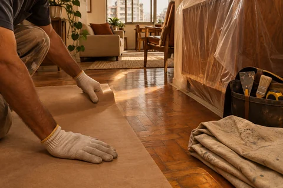

Como a obra entra na rotina?
Explore a sequência de uma reforma e veja o que combinar se o imóvel estiver ocupado ou vazio.
Roteiro da reforma
O que precisa estar combinado antes de começar?
Mapeie o que precisa ficar em uso, onde proteger a circulação e como serão acertados os acessos.
Confirme a entrega das chaves, os acessos permitidos e o que deve permanecer no imóvel.
Como acompanhar o que acontece na obra?
Combine quais áreas terão intervenção em cada etapa, como avisar mudanças e quais decisões precisam de aprovação.
Combine quem recebe as atualizações, como aprovar mudanças e quando é possível visitar o imóvel.
O que será conferido na passagem final?
Reserve a conferência dos acabamentos e dos itens combinados. Alinhe a liberação de cada espaço e registre as pendências.
Combine uma visita para a conferência final, o registro de pendências e a devolução dos acessos.

O roteiro nasce na visita.
A sequência serve para levantar perguntas. A ordem dos serviços depende do imóvel e do escopo confirmado com a equipe.
Conte como o imóvel será usado.
A situação do imóvel ajuda a equipe a preparar a conversa sobre acesso, circulação e etapas.
Preparar visita
Pedido de visita simulado
Em um atendimento real, a equipe usaria esse resumo para preparar a conversa e combinar a visita.